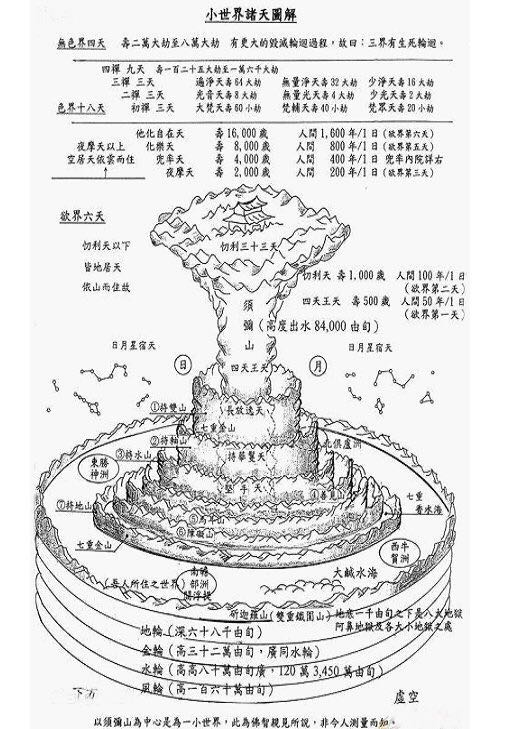

一、简介
世，指时间的迁流，包括过去、现在、未来三世。界，指空间的划分，包括东、西、南、北、上、下十方。世界，就是一个日月围绕照耀之下的时空。
佛教说明世界组织的情形：每一小世界，其形式皆同，中央有须弥山，透过大海，矗立在地轮上，地轮之下为金轮，再下为水轮，再下为风轮，风轮之外便是虚空。须弥山上下皆大，中央独小，日月即在山腰，四天王天居山腰四面，忉利天在山顶，在忉利天的上空有夜摩天、兜率天、化乐天、他化自在天，再上则为色界十八天，及无色界四天。在须弥山的山根有七重金山，七重香水海，环绕之，每一重海，间一重山，在第七重金山外有碱海，碱海之外有大铁围山。在碱海四方有四大部洲，即东胜神洲（东方持国天王守护）、南赡部洲（即地球，南方增长天王守护）、西牛贺洲（西方广目天王守护）以及北俱芦洲（北方多闻天王守护），叫做四天下，每洲旁各有两中洲，数百小洲而为眷属。如是九山八海、一日月、四大部洲、六欲天、上覆以初禅三天，为一小世界。集一千小世界，上覆以二禅三天，为一小千世界。集一千小千世界，上覆以三禅三天，为一中千世界。集一千中千世界，上覆以四禅九天，及四空天，为一大千世界。因为这中间有三个千的倍数，所以大千世界，又名为三千大千世界。三千大千世界是佛教的宇宙观。三千大千世界即大千世界，因为三个千连乘，所以叫三千大千世界。
二、欲界六天
1、四天王天：须弥山腰，自寿五百岁（一天等于人间50年，合计九百万年），负责守护四大部洲，管理各种鬼神，统领众多天兵天将，抵御阿修罗对三十三天的入侵。
2、忉利天：须弥山顶，自寿一千岁（一天等于人间100年，合计三千六百万年），四方各有八个天国，中央为主国帝释天，统领三十三天、四王天及四大部洲人类，评判世间是非善恶，统帅天兵与阿修罗作战。
3、夜摩天：忉利天之上十六万由旬的虚空中，都是双胞胎，也叫双胞欲天、离诤天。自寿两千岁（人间一亿四千六百万年），佛经云：日月光明上照不及，是诸人等自有光明。
4、兜率天：夜摩天之上三亿二万由旬处，自寿四千岁（人间五亿八千四百万年），住着一位非常了不起的圣者——未来佛弥勒菩萨。每位佛陀于人间示现成佛的前一世（最后有者菩萨），都住在兜率天。
5、化乐天：兜率天之上十六亿四万由旬处，自寿八千岁（人间二十三亿三千六百万年），懒人天堂，此界天人能随意变化出种种悦意器物，随意娱乐。
6、他化自在天：化乐天之上十二亿八千由旬处，自寿一万六千岁（人间九十三亿四千四百万年），懒人天堂，此天夺他所化而自娱乐，故言他化自在，天主是魔王波旬。
四王天和忉利天属于地居天，依地而住，与人类福祸相依，民间供奉的神大多数属此二天，忉利天也叫33天，天主释提桓因就是传说中的玉皇大帝。剩余六天属于空居天，依云而住。六欲天的业因，共同者是行十善业、守戒、布施，其次是不同程度的节欲禁欲。六欲天寿命长、享受各种快乐，无病无苦，不用劳作，各种衣食自然化现。没有大小便，不会疲倦，不用眨眼睛，根据喜好随意变化身色。相貌庄严美丽，人间最美的女子在天人看来丑得无法形容。他们也有夫妻、嫁娶之事，不乏一夫多妻，如帝释天姬妾多达亿数。四王天、忉利天男女交合，和人间一样，只不过不泄精液，只泄风气。夜摩天男女拥抱即得性满足、兜率天仅握手、化乐天相对一笑，他化自在天更是互递秋波便完成男女之事。六欲天的生育，直接膝盖上化生。初生时的形貌，从四王天到他化天，依次和人间五、六、七、八、九、十岁孩童，生后不久即迅速长大成人。
三、色界十八天天
初禅3天：梵众天、梵辅天、大梵天
二禅3天：少光天、无量光天、光音天
三禅3天：少净天、无量净天、遍净天
四禅9天，分为凡圣
凡夫：福生天、福爱天、广果天、无想天
圣者：无烦天、无热天、善见天、善现天、色究竟天
初禅3天的天主叫大梵天。大梵天王的业因，除增上十善、禅定外，还有慈、悲、喜、舍四无量心。大梵天王为一小世界主。道德高尚，清净仁慈，但因生于天地万物之先，自以为天地万物是他所创造，以众生之父、之主自居。《大日经》卷六：所谓大梵天，名我慢自然。太虚法师《真现实论》说：大梵天先天而生，超越阴阳，即是基督教等一神教信仰的上帝。
二禅三天，为成就二禅者所生，此天常受发自深心的禅定“喜”乐，超离了一切由外而来的感觉经验，其寿数以大劫计算。二禅天特以光明为着，尤其是光音天，即离语言，以放光代音声以交流信息之意，此天主为一小千世界主。
三禅三天，为成就三禅者所生，此天常受发自深心的禅“乐”，此乐自内源源而出，绵绵寂静，被称为三界中最上之乐。其中净天天天主为一中千世界主。三禅天特以身心清净为着，如《楞严经》所说：身心安隐，得无量乐。
色究竟天为色界之顶巅，故名色究竟，又名魔醯首罗天，意译“大自在天”，其天王摩醯首罗是三千大千世界主，是诸神中最尊者，其形相为八臂三目，骑白牛，即婆罗门教信仰的至上神湿婆。
四禅九天，分凡、圣二级，皆为成就四禅者所生。此天恒处于“舍”的定心中，苦乐双亡，心如明镜止水，无丝毫扰动。其中圣者5天为证得“不还果”的阿那含人，称为“五不还天”,即再不复返欲界受生的意思。
四、无色界4天
无色界四天，依所入定而区分，皆恒处禅定中，连固定的形体亦消失，寿命极长。说无色，也非完全没有物质身体，只不过其形质极为微细。
空无边处：定中唯见一无边虚空，寿二万大劫
识无边处：定中唯见心识无量无边，寿四万大劫
无所有处：空色既亡，识心都灭，唯见一无所有，寿长六万大劫
非想非非想处：于无尽中，发宣尽性，如存不存，若尽非尽，寿长八万大劫，为三界中的长寿冠军。又因为处于三界之顶颠，故名“有顶”。
无色界，有部宗认为这一界没有眼耳鼻舌身、色声香味触等色法，天人都是“隐形人”，色界天眼也无法看见。一般情况下，无色界天人不会成为神明，因为他们不可见、不可闻、不可触、不可说，不会对人类的祈祷、供奉做出任何反馈。除了正牌天神，还有一些恶鬼、旁生、地狱众生也会被人们当做神明崇拜。如孤独地狱众生附在无情物上显现怪通，人类也可藉由种种途径拥有“神通”。
《楞严经》说生四无色界天者有两种人：一者，从无想天等外道天继续深入禅定而入，为凡夫。二者，从五不还天上升，多住于超越三界的“受想灭尽定”中，而寄居于非想非非想处，不回向大乘的钝根阿罗汉。

诸天虽然长寿快乐，神通自在，为世人艳羡，但也有苦恼，欲界天下二天中，有宿世修福不多而相对贫穷者，或为人臣妾，受他所制，或神通未能如意，或受阿修罗作乱的战祸威胁。而且，不管寿命多长，福报多大，即贵为天主，也终有一死。六欲天人临死前有五种预兆出现：身光消失、不乐本座、花冠枯萎、天衣垢坏、身出汗臭，生平一起嬉戏玩乐的天女们，见到这种“五衰相现”，便皆远离。又以天眼观见将生何处，若是堕落，则更是凄惶恐怖，痛苦不堪，如地狱苦。
法华经：三界无安，犹如火宅。众苦充满，甚可怖畏。
人类，看起来那么平凡、脆弱，短短几十年的生命再怎么妆点，也逃不出默默等死的结局。从古至今，很多人羡慕衣袂飘飘、神通广大、长生不老、逍遥自在的神仙。然而，在佛陀宣说的所有法门中，人身被誉为十万个如意宝也换不来的宝洲：只有做人，才有机会真正超越一切显现的束缚，回归广袤无边的法性。
佛告文殊师利：六道四生，唯人最贵，唯人最灵。佛从人中修成，业从人中造就。人能修福，决生天上。人能造恶，必堕地狱。有德为神，有道成圣……临命终时，随业受报。人道不修，余道不及，一失人身，万劫不复！
作为释迦牟尼佛教法的随学者，追寻佛陀的足迹是每一位佛子的共同心愿：依人身修行，依人身证道，依人身利益有情，依人身弘扬正法。有情穿越轮回大海的航程中，从修行伊始至究竟涅盘，暇满舟是修行人的最胜助伴之一。

乃至菩提果，皈依诸佛陀
亦依正法宝，菩萨诸圣众
亦依正法宝，菩萨诸圣众